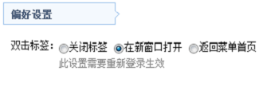
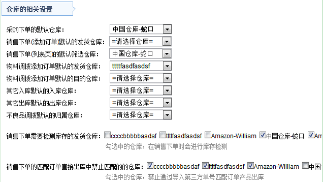
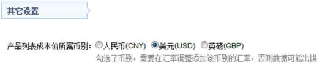
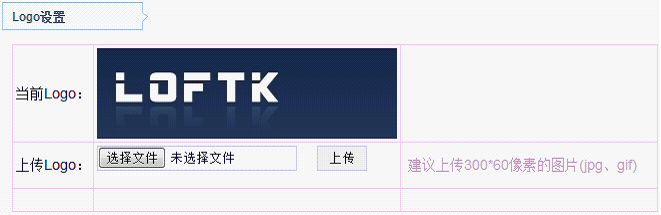

信息设置中有一些系统使用的设置，暂时设置有“偏好设置”、“仓库的相关设置”、“其它设置”、“Logo设置”。
偏好设置如下图，所有用户都可以根据个人使用习惯来修改此配置，偏好设置中设置只会影响个人的使用，不会影响他人，如下图所示的双击系统标签，有三种选择，1、关闭标签，2、在新窗口打开，3、返回菜单首页。

仓库相关设置：

其它设置->产品列表页显示的成本价：

Logo设置，显示在系统左上角的logo图片：
